样本数据与可视化程序 Sample Data & Visualisation
大数据分析［2026 国际商务］ · 配合第二章「数据类型」、第三章「数据整备」与第四章「数据描述与可视化」的样本页 · 2026 秋季学期
Lecture 2 · 数据类型样本（10 个程序，逐行英文注释）
| 课件页 | 数据类型 | 程序（逐行英文注释） | 样本数据 |
|---|---|---|---|
| 第 10 帧 | 数值型数据（连续 / 离散） 800 个交易日的日对数收益率与成交量的直方图、箱线图（离群点），以及每日订单数的离散计数分布。 |
01_datatype_numeric.py | numeric_samples.csv |
| 第 12 帧 | 类别型数据（名义 / 有序） 行业（名义，6 类）与信用评级（有序，AAA–C）的频数条形图，以及行业 × 评级交叉热力图。 |
02_datatype_categorical.py | categorical_samples.csv |
| 第 13 帧 | 结构化 / 半结构化 / 非结构化 定长字段表格、嵌套且字段可缺省的 JSON、无字段的自然语言文本三种形态并排对照。 |
10_datatype_structured_unstructured.py | structured_orders.csv、semistructured_orders.json、unstructured_note.txt |
| 第 15 帧 | 文本数据 20 条财经短讯切词后的 Top-15 词频、逐篇字符数与长度分布（决定截断与填充策略）。 |
03_datatype_text.py | text_samples.csv |
| 第 16 帧 | 图像数据 3 类 × 4 张 32×32 灰度样本马赛克、彩色图像三通道分解与像素强度分布。 |
04_datatype_image.py | image_samples.npy、image_labels.npy |
| 第 17 帧 | 音频数据 8 kHz、1 秒的纯音 / 扫频 / 调幅噪声：时域波形、短时傅里叶频谱图与包络。 |
05_datatype_audio.py | audio_tone_440.wav、audio_chirp_200_2000.wav、audio_am_noise.wav |
| 第 18 帧 | 视频数据 12 帧 48×48 序列（抽帧 PNG 在 data/video_frames/）、帧间差分运动检测与逐帧亮度信号。 |
06_datatype_video.py | video_frames.npy |
| 第 19 帧 | 图 / 网络数据 60 节点 BA 无标度网络的力导向布局（节点大小与颜色表示度数）与度分布双对数图。 |
07_datatype_graph.py | graph_edges.csv、graph_nodes.csv |
| 第 20 帧 | 时空轨迹数据 深圳南山周边 3 条轨迹 × 120 个点：经纬度路径、hexbin 空间密度与速度时间序列。 |
08_datatype_spatiotemporal.py | spatiotemporal_tracks.csv |
| 第 23 帧 | 截面 / 时序 / 面板 截面排序条形图、含 12 期移动平均的 120 个月 CPI、8 家公司 × 10 年的面板小多图。 |
09_datastructure_cross_time_panel.py | structure_cross_section.csv、structure_time_series.csv、structure_panel.csv |
运行方式：pip install -r code/requirements.txt → cd code && python run_all.py；
样本写入 data/，图片写入 figures/。随机种子固定 20260917，每次运行结果完全一致。
Lecture 2 示例图片 Figures

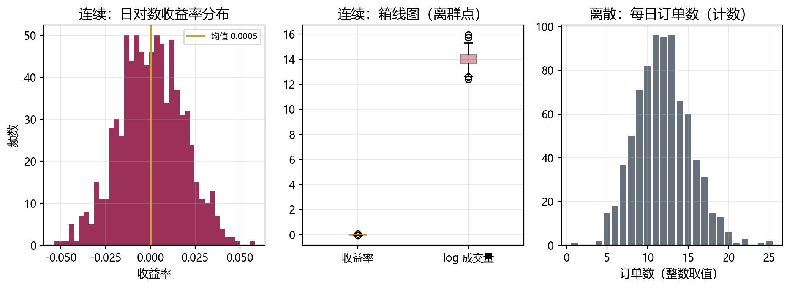

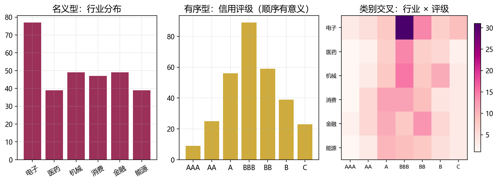

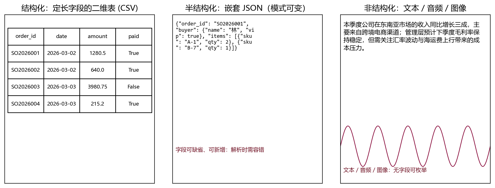

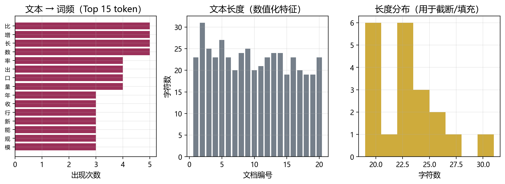

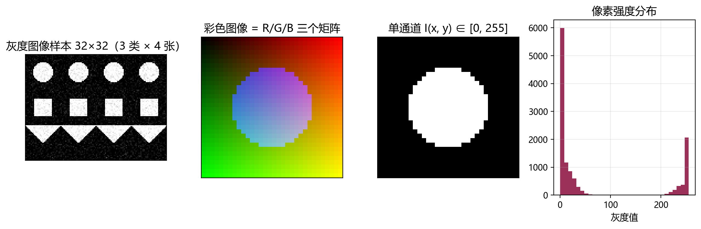

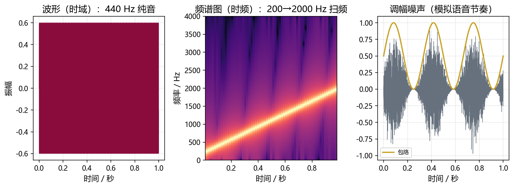

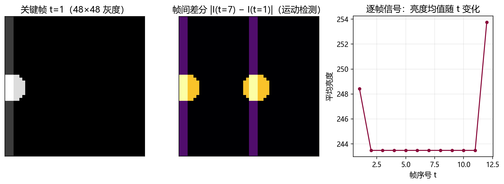

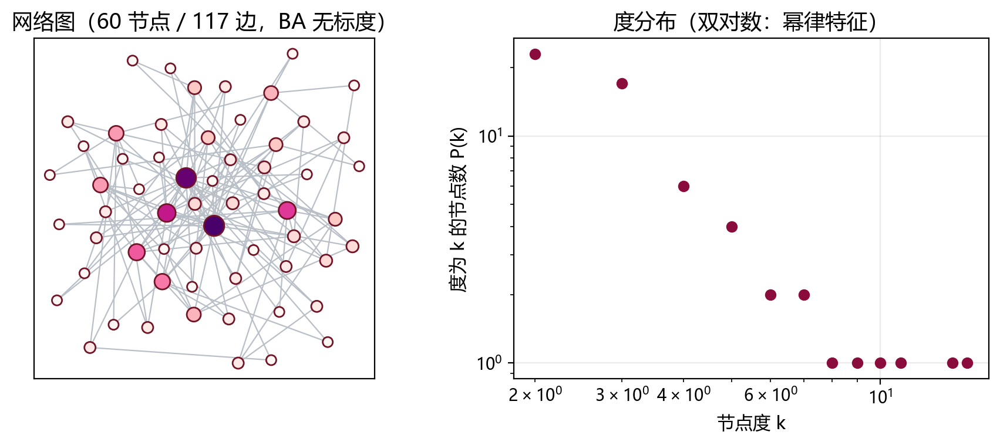

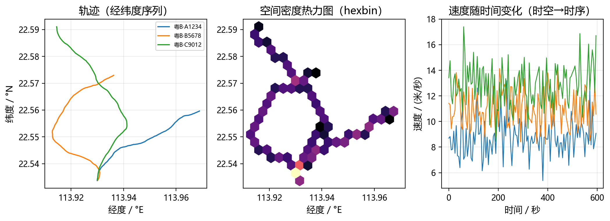

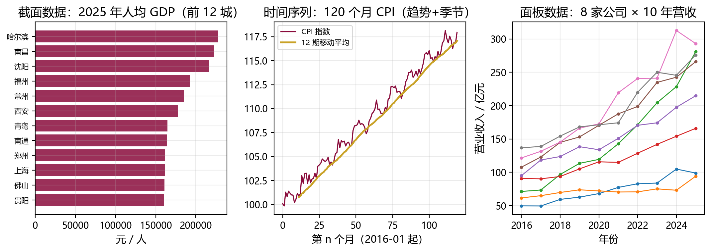
Lecture 3 · 数据整备样本（10 个程序，逐行英文注释）
运行方式：pip install -r code/lecture03/requirements.txt → cd code/lecture03 && python run_all.py；
样本写入 data/lecture03/，图片写入 figures/lecture03/。随机种子固定 20260317，每次运行结果完全一致。
Lecture 3 示例图片 Figures

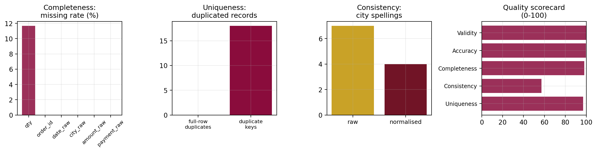

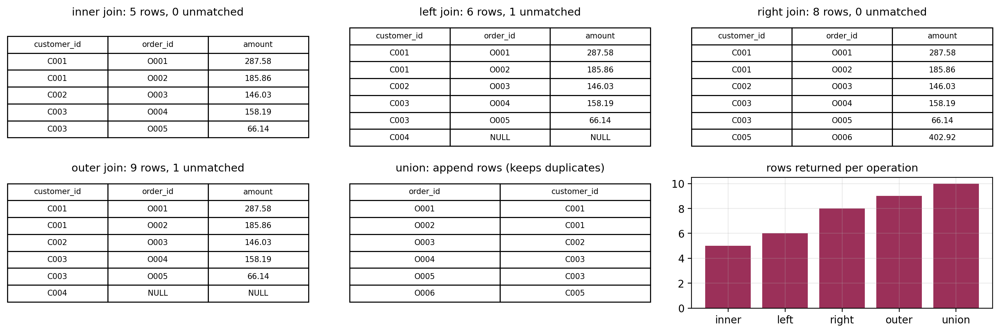

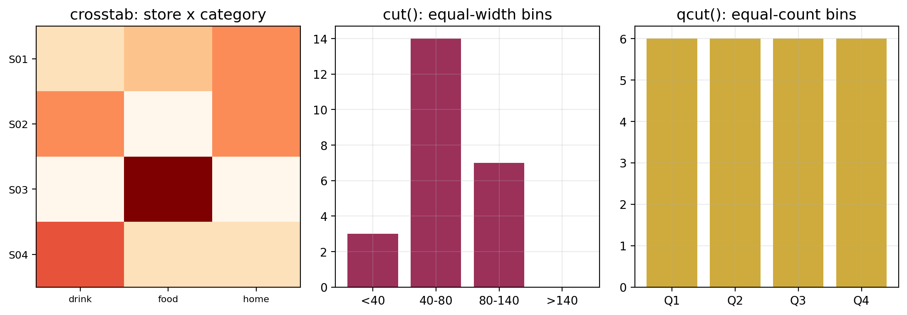

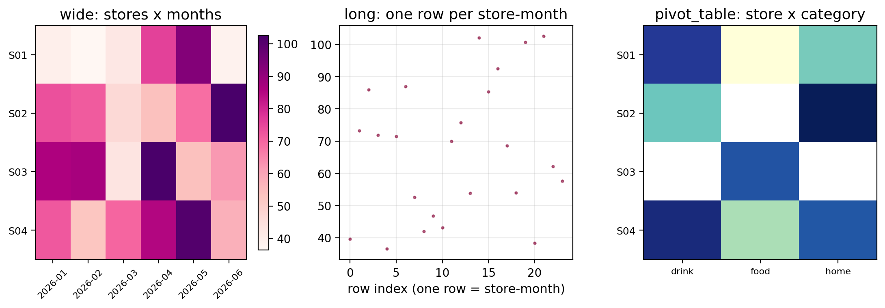

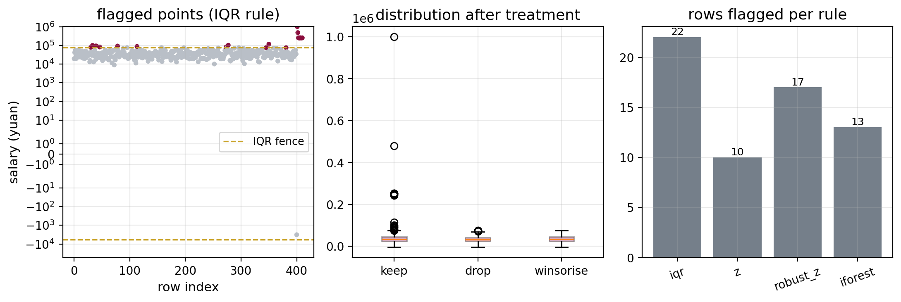

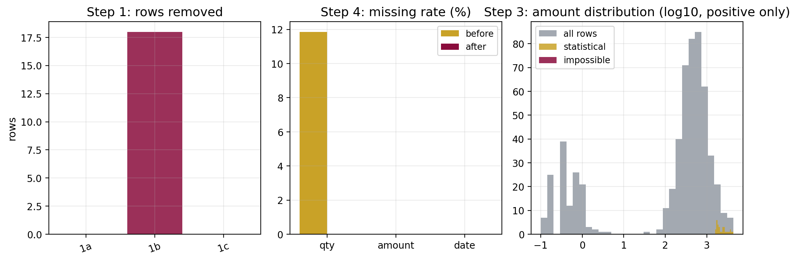

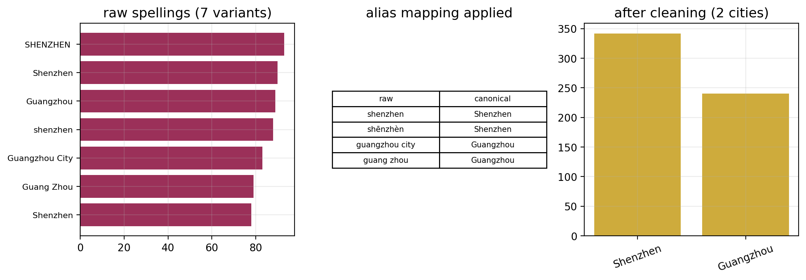

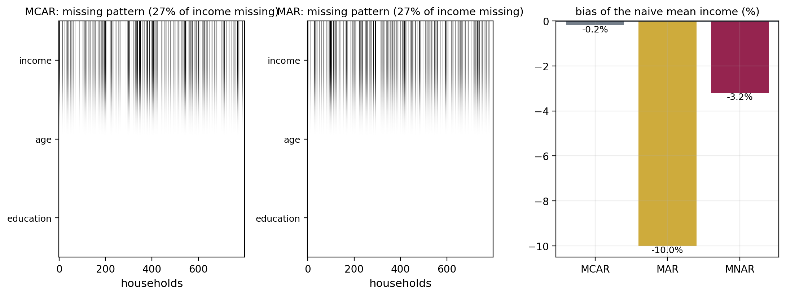

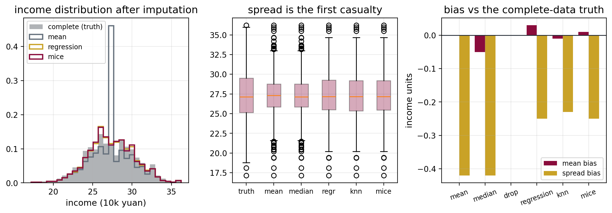

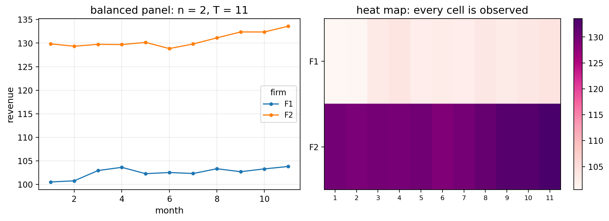

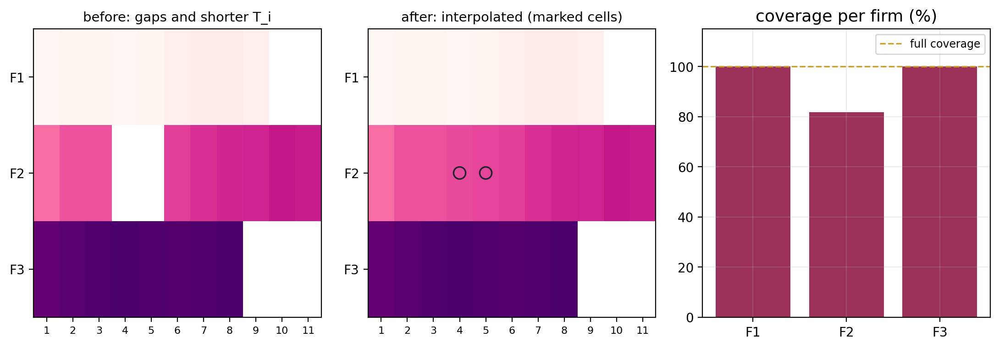

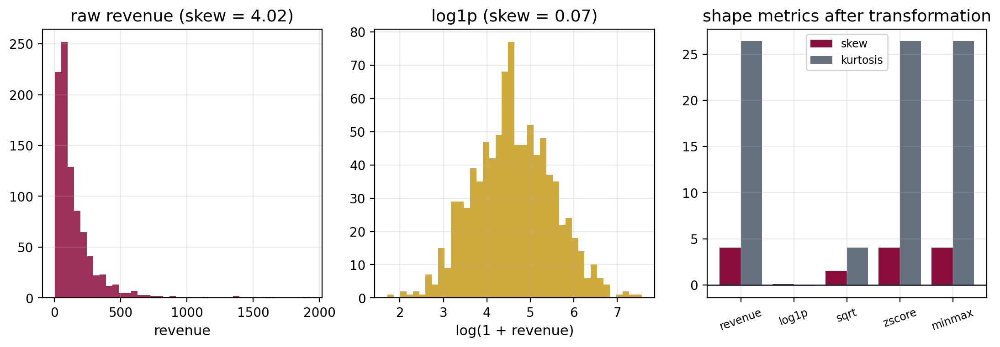
Lecture 4 · 数据描述与可视化样本（13 个程序，逐行英文注释）
运行方式：pip install -r code/lecture04/requirements.txt → cd code/lecture04 && python run_all.py；
样本写入 data/lecture04/，图片写入 figures/lecture04/，交互 HTML 写入 figures/lecture04/interactive/。
随机种子固定 20260417，每次运行结果完全一致；全部用 Python 完成（不使用 Power BI / Tableau）。
| 课件页 | 可视化主题 | 程序（逐行英文注释） | 样本数据 / 交互产物 |
|---|---|---|---|
| 第 13 帧 | 文档完成度与数据字典 Document coverage 500 行调研样本：20 项文档要素逐项打分（20/20 已填）、字段非空率与自动生成的数据字典（9 个字段）。 |
l4_01_docs_metadata.py | l4_survey_raw.csv、l4_data_dictionary.csv、l4_data_dictionary.md、l4_docs_coverage.csv |
| 第 48 帧 | 今天的 A 股行业热力树图 A-share treemap 2026-10-22 收盘真实数据：5568 只中取成交额前 697 只，按申万一级行业成 31 组；6 个行业上涨、环保 -7.1%、通信 -6.8% 最深；个股中位数 -3.54%，指数 -1.48%。 |
ashare_generate_heatmap.py | heatmap_industry.json 交互版热力图（可切换分组与 Top-N） ↗ |
| 第 49 帧 | 同一批数据的两种读法 Two readings 左：31 个行业的加权涨跌幅；右：697 只个股涨跌幅的分布（中位数 -3.5%）。树图看结构与量级，直方图看分布与尾部。 |
ashare_render_heatmap.py | heatmap_industry.json |
| 第 23 帧 | 中心趋势的稳健性 Robust centre 1000 个收入观测加 3 个离群点：均值移动 +12.5%、中位数只移动 +0.7%；均值/中位数/标准差/IQR/MAD 对照。 |
l4_02_descriptive_stats.py | l4_income_skewed.csv、l4_descriptive_table.csv |
| 第 24 帧 | 离散与分布形状 Dispersion & shape 同均值不同离散、三个离散指标对照、偏度（左偏/对称/右偏）、峰度（厚尾 t(3)/正态/薄尾均匀）。 |
l4_02_descriptive_stats.py | l4_descriptive_table.csv |
| 第 28 帧 | 同一变量五种画法 Five univariate charts 城市 GDP 的直方图、箱线图、小提琴图、ECDF 与茎叶图：换图型就换视角，分箱决定观感。 |
l4_05_chart_zoo.py | l4_city_gdp.csv |
| 第 37 帧 | 受限范围与相关系数 Restricted range 引力模型 220 对国家对：全样本 Pearson −0.589 / Spearman −0.606，只留最近 25% 的伙伴后降到 −0.200 / −0.213。 |
l4_03_correlation_crosstab.py | l4_trade_pairs.csv、l4_correlation_pearson.csv、l4_correlation_spearman.csv |
| 第 38 帧 | 多变量三视图 Multivariate views 60 家企业 × 8 年面板：相关矩阵热力图、按行业着色的散点、行业营收小多图、各行业 ROA 条件分布。 |
l4_04_multivariate.py | l4_firm_panel.csv、l4_conditional_roa.csv |
| 第 52 帧 | 七类图型总览 Chart zoo 柱状图、分布图、趋势图、散点图、相关矩阵、条形图、网络图，外加一格"按问题选图"的口诀。 |
l4_05_chart_zoo.py | l4_city_gdp.csv、l4_category_counts.csv |
| 第 64 帧 | 交互图与静态图 Interactive vs static 132 个月 × 4 类能源：静态图用于定稿汇报，交互 HTML（折线/散点/桑基）用于探索与课堂演示。 |
l4_06_plotly_interactive.py | l4_energy.csv 能耗趋势（交互） ↗ 收入散点（交互） ↗ 桑基图（交互） ↗ |
| 第 66 帧 | Python 仪表板 Dashboard KPI 卡（样本量、满意度、复购率、人均 GDP 中位数）+ 2×2 面板；plotly 子图导出单文件 HTML，替代 BI 工具。 |
l4_07_dashboard.py | l4_dashboard_kpi.csv 仪表板（交互） ↗ |
| 第 70 帧 | choropleth 与符号地图 Geo maps 31 个省级单位与 24 个经济体：GeoJSON 分级统计图、总量气泡图、世界 choropleth 与贸易流向图。 |
l4_08_geo_maps.py | l4_province_gdp.csv、l4_country_indicators.csv、china_provinces.geojson 世界 choropleth（交互） ↗ 贸易流向图（交互） ↗ |
| 第 72 帧 | 空间自相关 Moran 散点 4 近邻权重矩阵：Moran's I = 0.659，HH 16 / LL 13 / LH 2——人均 GDP 存在明显的正向空间聚集。 |
l4_08_geo_maps.py | l4_moran.csv |
| 第 79 帧 | 六种误导手法与修正 截断纵轴、气泡按半径、双轴伪相关、选择性区间、饼图讲相近占比、丢掉不确定性：上排误导、下排修正。 |
l4_09_misleading.py | l4_ab_test.csv |
| 第 83 帧 | 不确定性四视图 Uncertainty B=2000 次自助重采样：误差棒、差值分布与区间（[−0.0056, +0.0456] 跨 0）、时间序列置信带、扇形预测带。 |
l4_10_uncertainty.py | l4_ab_test.csv、l4_uncertainty_summary.csv |
| 第 85 帧 | 色板与灰度可访问性 Palette accessibility 三套色板的原色/灰度对照、感知亮度分布与 WCAG 对比度矩阵（≥4.5 达标），附 12 项可访问性清单。 |
l4_11_accessibility.py | l4_category_counts.csv、l4_accessibility_report.csv、l4_accessibility_checklist.csv |
| 第 89 帧 | 三种降维投影对照 Projections 同一份 12 维客户数据：PCA（前两成分 21.8% + 10.5%）、t-SNE、UMAP 三种投影，附碎石图与邻域保真度（t-SNE 0.89 / UMAP 0.85 / PCA 0.75）。 |
l4_13_highdim.py | l4_highdim_customers.csv、l4_highdim_projection_metrics.csv 三维嵌入（交互） ↗ |
| 第 93 帧 | 多变量剖面 Parallel & clustered 8 个标准化特征的平行坐标（三个群体均值剖面）、按层次聚类重排的相关热力图、以及只作示意的雷达图。 |
l4_13_highdim.py | l4_highdim_customers.csv |
| 第 94 帧 | 模型解释性可视化 Interpretability 随机森林预测流失：置换重要性（最近购买距今天数 0.195，10 次重复带误差棒）、PDP 平均边际效应与 60 条 ICE 个体曲线。 |
l4_13_highdim.py | l4_highdim_importance.csv |
| 第 98 帧 | 报告主图与图注 Report pipeline 统计表 + 四联报告图 + 自足图注一次导出：纵轴截断、缺失处理、误差棒与样本量都写在图注里。 |
l4_12_report_pipeline.py | report/table1_descriptive.csv、report/table2_channel.csv、report/captions.md |
Lecture 4 示例图片 Figures

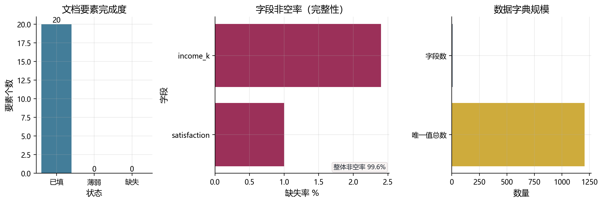

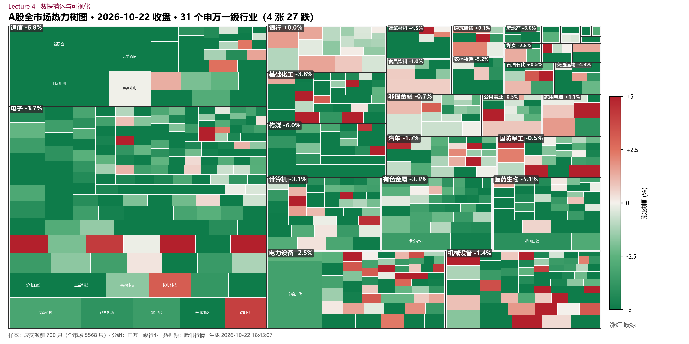

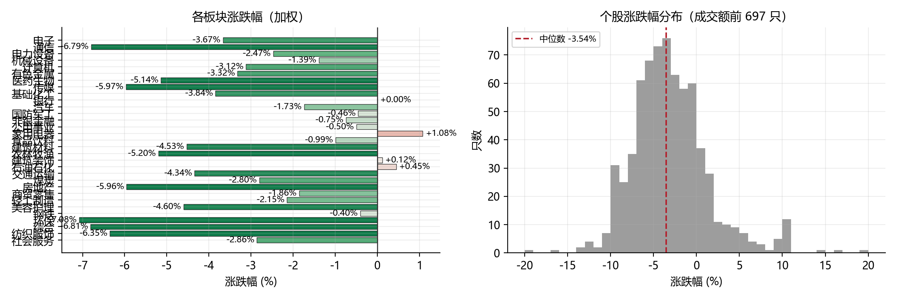

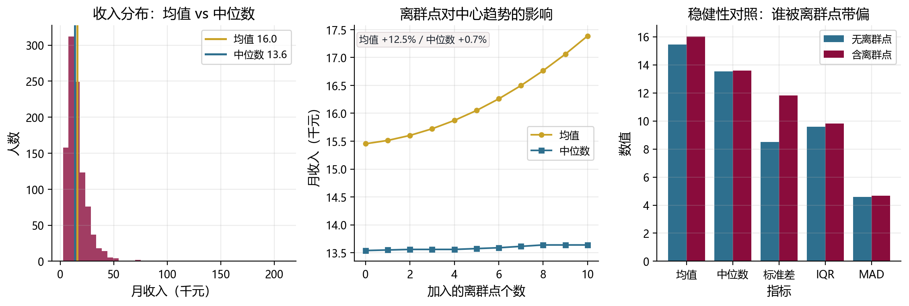

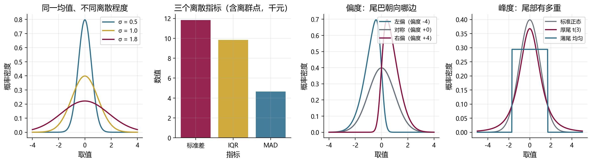

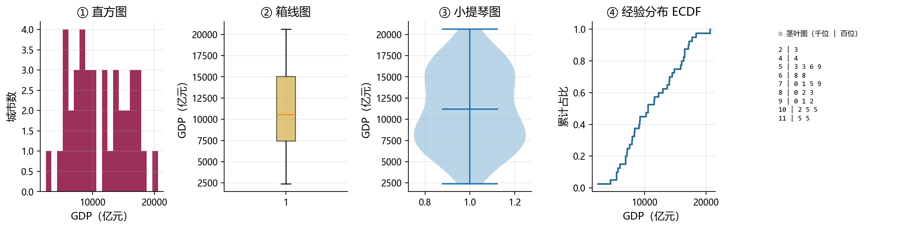

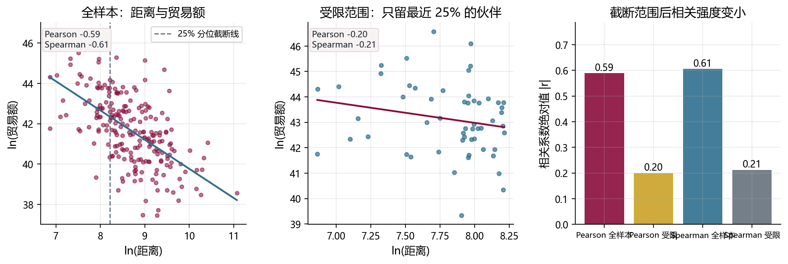

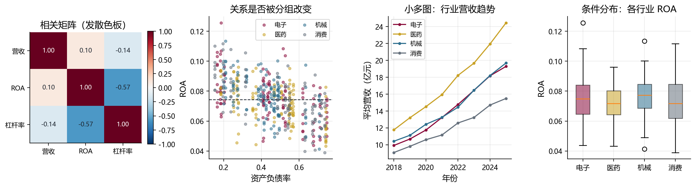

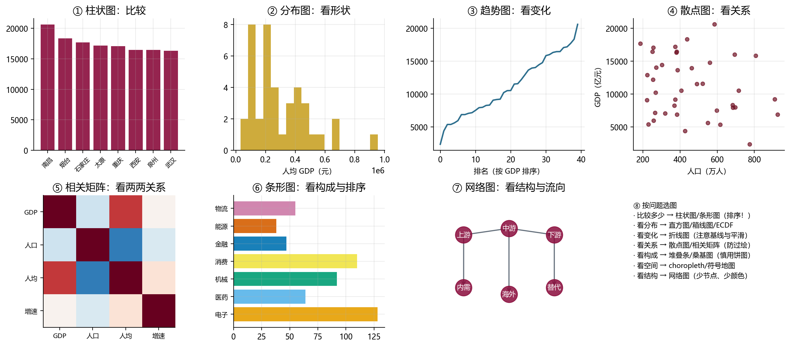

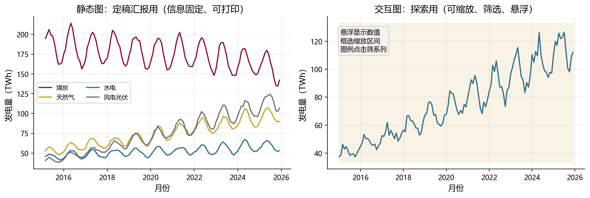

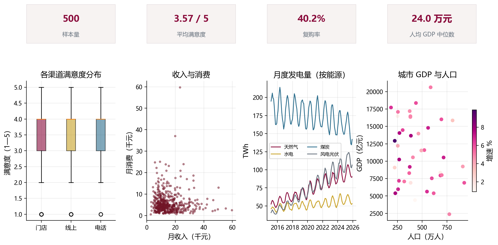

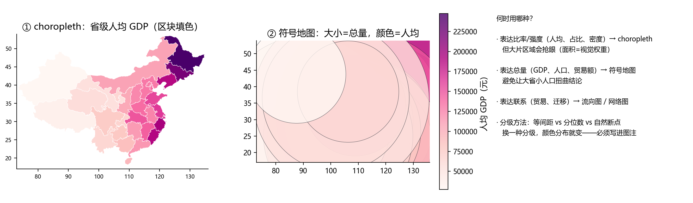

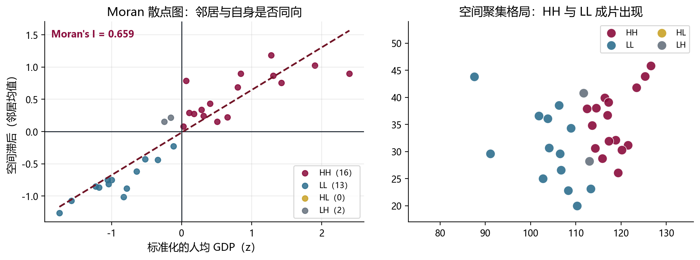

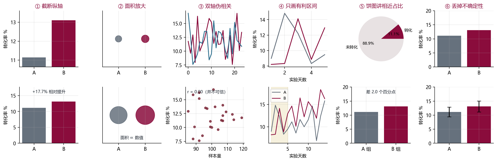

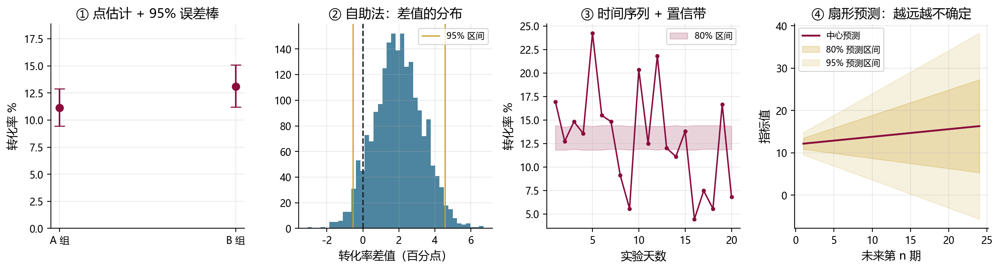

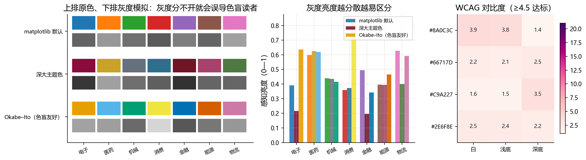

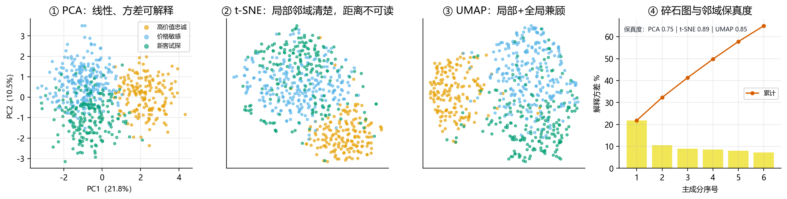

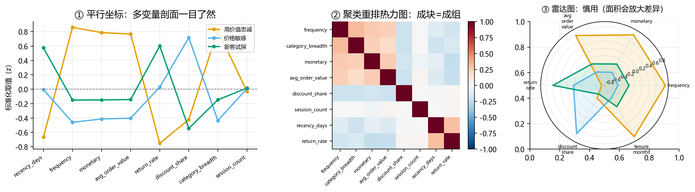

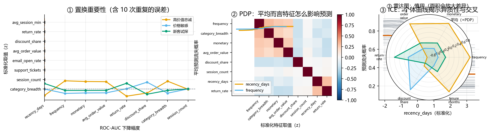

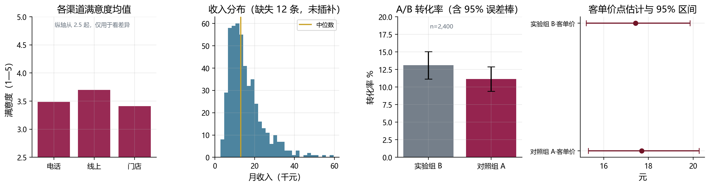
Lecture 5 · 机器学习入门样本（12 个程序，逐行英文注释）
运行方式：pip install -r code/lecture05/requirements.txt → cd code/lecture05 && python run_all.py；
样本写入 data/lecture05/，图片写入 figures/lecture05/，
模型卡与运行记录写入 data/lecture05/artifacts/。
随机种子固定 20260506，每次运行结果完全一致；示例使用 scikit-learn、XGBoost 与 LightGBM。
| 课件页 | 机器学习主题 | 程序（逐行英文注释） | 样本数据 / 模型卡 |
|---|---|---|---|
| 第 28 帧 | 端到端流水线与基线 Pipeline and baseline 3,000 笔账户、正类 26.7%：多数类基线准确率 73.3% 但 ROC-AUC 只有 0.500；逻辑回归测试集 AUC 0.840、准确率 80.8%。 |
l5_01_pipeline_baseline.py | l5_credit_default.csv、l5_baseline_scores.csv |
| 第 30 帧 | 四种协议与数据泄漏 Leakage protocols 同一模型：诚实流水线 0.824、先选特征再切分 0.825、目标泄漏 1.000、重复行 0.828；诚实留出集 0.865。 |
l5_02_cv_and_leakage.py | l5_cv_results.csv |
| 第 33 帧 | 三种复杂度 Under/over-fitting 房价样本 1,200 行：多项式次数 1（欠拟合）、2（最佳）、12（过拟合）；训练误差单调下降而测试误差先降后升。 |
l5_03_overfitting_curves.py | l5_housing.csv、l5_complexity_table.csv |
| 第 36 帧 | 学习曲线诊断 Learning curves 三种模型的训练误差与交叉验证误差随样本量变化：高偏差两线都高且靠近，高方差留下大缺口。 |
l5_03_overfitting_curves.py | l5_complexity_table.csv |
| 第 39 帧 | 正则化路径 Shrinkage vs sparsity 164 个三次展开特征、900 行训练数据：Ridge 整体收缩、Lasso 逐个归零；惩罚后样本外误差更低。 |
l5_05_regularized_regression.py | l5_regression_scores.csv |
| 第 43 帧 | 指标、阈值与校准 Metrics and thresholds 测试集 ROC-AUC 0.857、平均精度 0.704；漏判代价为误报 5 倍时最优阈值 0.26；随机森林 Brier 0.146 经等渗校准降到 0.143。 |
l5_04_metrics_thresholds.py | l5_threshold_table.csv、l5_credit_default.csv |
| 第 50 帧 | 回归族对照 Regression family OLS / Ridge / Lasso / Elastic Net 的稀疏性、系数与残差分布对照：稀疏性的价值在于可解释与部署成本。 |
l5_05_regularized_regression.py | l5_regression_scores.csv、l5_coefficients.csv |
| 第 54 帧 | KNN 与 SVM 决策边界 Boundaries 双月牙样本：k=1（0.839）、k=15（0.911）、k=99（0.861）；网格搜索选出 k=15，交叉验证 0.921、测试 0.911。 |
l5_06_knn_svm_tuning.py | l5_two_moons.csv、l5_tuning_results.csv、l5_svm_tuning.csv |
| 第 57 帧 | 树与集成 Trees and ensembles 单树 0.790 → 随机森林 0.822 / 梯度提升 0.831 / XGBoost 0.822（0.29 s）/ LightGBM 0.809（0.19 s）；重要性首位是还款状态。 |
l5_07_trees_ensembles.py | l5_ensemble_scores.csv、l5_feature_importance.csv |
| 第 64 帧 | PCA 与潜在因子 PCA and factors 240 个月 × 8 个宏观序列（真实结构 3 个因子）：前三个成分解释 50.9% + 18.2% + 15.9%，五个累计 92.2%。 |
l5_08_pca_factors.py | l5_macro_panel.csv、l5_pca_loadings.csv、l5_pca_reconstruction.csv、l5_pca_scores.csv |
| 第 71 帧 | 聚类三法对照 Clustering families 830 个客户（含 30 个离群点）：k-means 与 Ward 恢复 4 组（ARI 1.00 / 0.99）；DBSCAN 单一 eps 只得 2 组 + 25 个噪声点。 |
l5_09_clustering.py | l5_customers_behavior.csv、l5_cluster_k_table.csv、l5_cluster_labels.csv、l5_cluster_scores.csv |
| 第 78 帧 | 两层网络训练 MLP training 纯 NumPy 手写前向/反向 + mini-batch 梯度下降：测试准确率 0.929，与 scikit-learn 同宽度网络 0.933 几乎一致。 |
l5_10_mlp_numpy.py | l5_mlp_history.csv、l5_two_moons.csv |
| 第 84 帧 | Q-learning 网格世界 Reinforcement learning 6×6 网格、五个障碍、ε-贪心：最后 20 回合平均回报 5.20、10 步到达目标，贪心路径长度 11。 |
l5_11_rl_gridworld.py | l5_rl_returns.csv |
| 第 89 帧 | 解释性可视化与模型卡 Interpretability 置换重要性（还款状态 0.094 / 0.092 / 0.090）、PDP、ICE 与二维交互面；配套自动生成的模型卡与运行记录。 |
l5_12_interpretability_modelcard.py | l5_model_importance.csv、l5_credit_default.csv、artifacts/model_card_l5_credit.md、artifacts/l5_run_log_12.json |
Lecture 5 示例图片 Figures

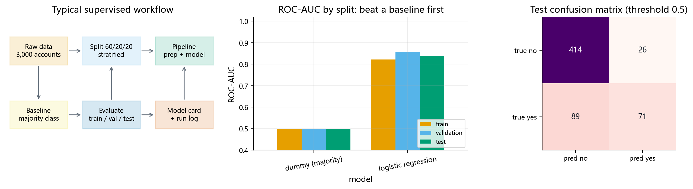

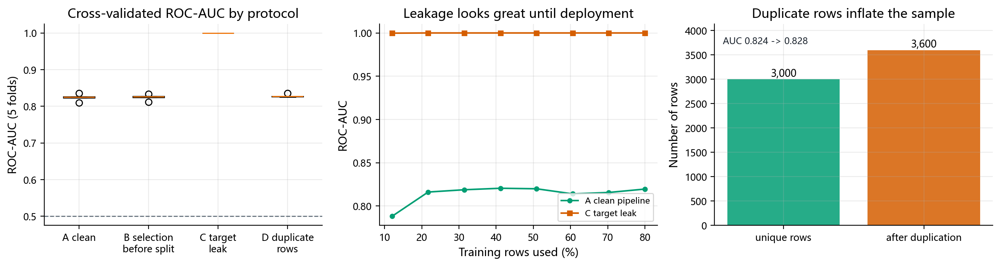

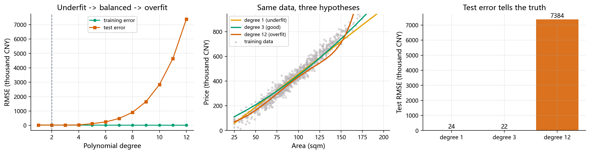

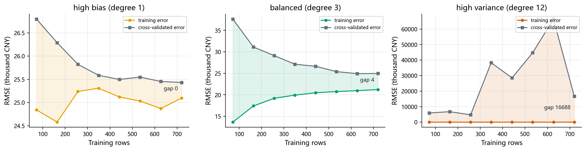

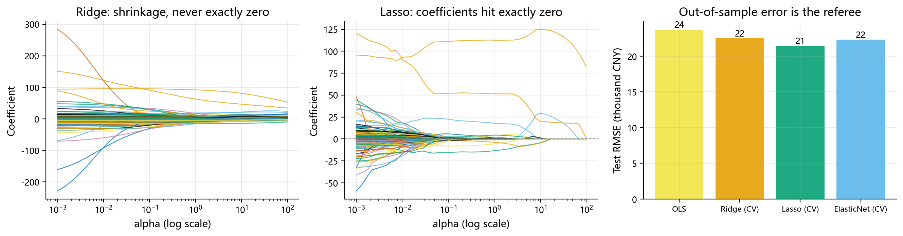

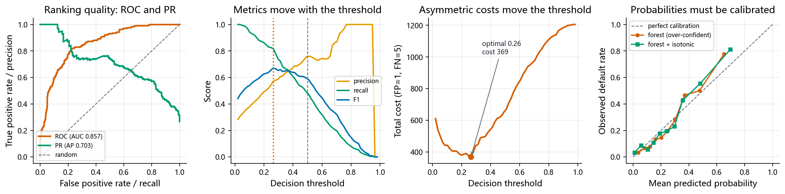

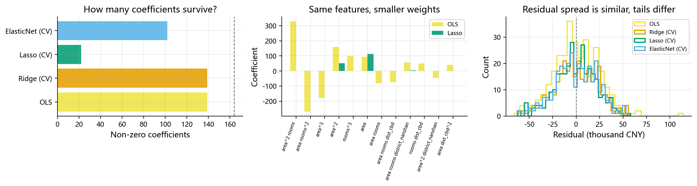

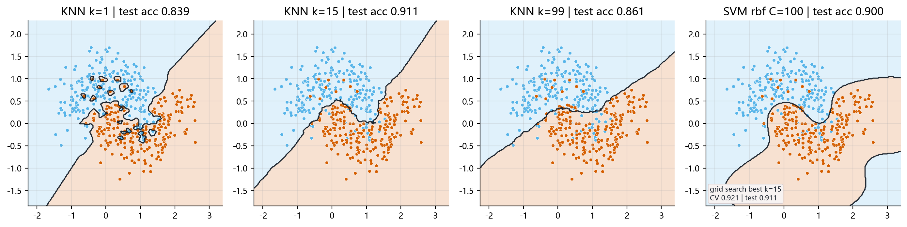


Lecture 6 · 逻辑回归与线性分类器样本（12 个程序，逐行英文注释）
运行方式：pip install -r code/lecture06/requirements.txt →
cd code/lecture06 && python run_all.py；
样本写入 data/lecture06/，图片写入 figures/lecture06/，
推断摘录与运行记录写入 data/lecture06/artifacts/。
本讲需要 statsmodels（推断视角）与 torch（自动求导对照）。
| 帧 | 主题 | 程序 | 数据 |
|---|---|---|---|
| 27 | 正规方程的几何：投影 Projection | l6_01_linreg_normal_equation.py | l6_prostate.csv l6_coef_compare.csv |
| 29 | 前列腺数据：拟合与残差 Fit and residuals | l6_01_linreg_normal_equation.py | l6_prostate.csv l6_coef_compare.csv |
| 33 | 数值稳定性：正态方程 vs QR | l6_02_numerical_stability.py | l6_stability.csv l6_illconditioned.csv |
| 44 | 伯努利似然与逻辑损失 | l6_03_mle_gaussian.py | l6_spam.csv |
| 46 | 一维负对数似然曲面 NLL surface | l6_03_mle_gaussian.py | l6_nll_surface.csv |
| 55 | 离群点如何破坏回归分类器 Outliers | l6_05_linreg_vs_sigmoid.py | l6_two_class.csv |
| 56 | step、线性与 sigmoid 三条曲线 | l6_05_linreg_vs_sigmoid.py | l6_two_class.csv |
| 58 | sigmoid 的形状、导数与对称性 | l6_05_linreg_vs_sigmoid.py | — |
| 64 | 收敛曲线与学习率敏感性 | l6_05_linreg_vs_sigmoid.py | l6_two_class.csv l6_gd_history.csv |
| 69 | softmax 决策区域与概率面 | l6_07_softmax_regression.py | l6_three_class.csv l6_softmax_history.csv |
| 71 | 类别不平衡与重加权 Imbalance | l6_09_metrics_roc.py | l6_imbalanced.csv l6_threshold_metrics.csv |
| 73 | 概率校准与 ROC/PR | l6_09_metrics_roc.py | l6_metrics_summary.csv |
| 80 | 正则化路径与交叉验证选 λ | l6_08_regularization_cv.py | l6_regularization_scores.csv |
| 85 | 近似—过拟合与偏差-方差分解 | l6_11_overfit_curves.py | l6_poly_sample.csv l6_overfit_curve.csv l6_bias_variance.csv |
Lecture 6 示例图片 Figures


Lecture 7 · 监督学习算法族样本（12 个程序，逐行英文注释）
运行方式：pip install -r code/lecture07/requirements.txt →
cd code/lecture07 && python run_all.py；
样本写入 data/lecture07/，图片写入 figures/lecture07/，
SHAP 审计与运行记录写入 data/lecture07/artifacts/。
本讲需要 xgboost、lightgbm、catboost、optuna、shap。
| 帧 | 主题 | 程序 | 数据 |
|---|---|---|---|
| 27 | 软间隔与惩罚参数 C Soft margin | l7_01_svm_margin.py | l7_two_class.csv l7_svm_margin.csv |
| 33 | 四种核的决策边界 Four kernels | l7_02_svm_kernels.py | l7_svm_kernels.csv |
| 37 | 支持向量与间隔带 Support vectors | l7_01_svm_margin.py | l7_svm_margin.csv |
| 43 | 1-NN 与 5-NN 分类地图 | l7_03_knn_k_curve.py | l7_knn_sample.csv |
| 49 | k 与准确率：一条曲线讲完 | l7_03_knn_k_curve.py | l7_knn_k_curve.csv |
| 51 | 维度灾难：距离集中 | l7_04_curse_dimensionality.py | l7_dim_curse.csv |
| 63 | 贫困瞄准：回归树怎么切 | l7_05_tree_poverty.py | l7_poverty.csv l7_tree_depth.csv l7_tree_pruning.csv |
| 65 | OLS 与树：拟合与泛化 | l7_05_tree_poverty.py | l7_tree_depth.csv |
| 71 | OLS / 单树 / 随机森林 三对照 | l7_06_random_forest_oob.py | l7_ensemble_scores.csv |
| 77 | 树的数量与 OOB 误差 | l7_06_random_forest_oob.py | l7_rf_curve.csv l7_ensemble_scores.csv |
| 85 | 学习率 × 树数：二维调参面 | l7_07_gbdt_compare.py | l7_gbdt_compare.csv l7_gbdt_curve.csv |
| 88 | Optuna 搜索轨迹与参数重要性 | l7_08_optuna_search.py | l7_optuna_trials.csv |
| 92 | 类别不平衡与代价敏感阈值 | l7_10_imbalance_cost.py | l7_imbalanced.csv l7_cost_thresholds.csv |
| 94 | SHAP 摘要与依赖图 | l7_09_shap_audit.py | l7_shap_audit.csv l7_shap_single.csv |
Lecture 7 示例图片 Figures


Lecture 8 · 无监督学习样本（14 个程序，逐行英文注释）
运行方式：pip install -r code/lecture08/requirements.txt →
cd code/lecture08 && python run_all.py；
样本写入 data/lecture08/，图片写入 figures/lecture08/，
FAISS 基准与词表写入 data/lecture08/artifacts/。
本讲需要 umap-learn 与 faiss-cpu。
| 帧 | 主题 | 程序 | 数据 |
|---|---|---|---|
| 27 | 二维 PCA：手机的两个主成分 | l8_01_pca_basics.py | l8_smartphone.csv l8_pca_variance.csv |
| 30 | 标准化前后：主成分方向完全不同 | l8_01_pca_basics.py | l8_pca_variance.csv |
| 33 | 碎石图与累计方差 | l8_01_pca_basics.py | l8_pca_variance.csv |
| 37 | 图像压缩：k 从 2 到 32 | l8_02_pca_images.py | l8_pca_image_errors.csv |
| 41 | 因子载荷：手机参数背后的两个因子 | l8_03_factor_fama.py | l8_factor_loadings.csv |
| 49 | 三因子回归：暴露、拟合与残差 | l8_03_factor_fama.py | l8_ff3.csv l8_ff3_regression.csv |
| 55 | 感知图：12 个品牌的定位 | l8_04_perceptual_map.py | l8_brands.csv l8_perceptual_coords.csv |
| 59 | k-means 的 Voronoi 单元与失效形状 | l8_05_kmeans.py | l8_blobs.csv l8_kmeans_sweep.csv |
| 65 | 四种 linkage 的树状图 | l8_06_hierarchical.py | l8_chain.csv l8_linkage_compare.csv |
| 67 | k 的选择：肘部与轮廓给出不同答案 | l8_05_kmeans.py | l8_kmeans_sweep.csv l8_kmeans_failures.csv |
| 72 | GMM 的软分配与 EM 轨迹 | l8_08_gmm_em.py | l8_gmm.csv l8_em_trace.csv |
| 73 | DBSCAN 的密度结构、噪声与 k-means 的失败 | l8_07_dbscan.py | l8_density.csv l8_dbscan_grid.csv |
| 80 | 四种算法、两种指标 | l8_09_metrics.py | l8_cluster_metrics.csv l8_metric_trap.csv |
| 85 | 异常分数与最强规则 | l8_10_anomaly_rules.py | l8_anomaly.csv l8_rules.csv |
| 90 | 嵌入空间：PCA / t-SNE / UMAP | l8_11_embeddings.py | l8_highdim.csv l8_embedding_compare.csv |
| 94 | NMF 与 LDA：主题词与纯度 | l8_13_topics.py | l8_topics.csv l8_doc_topics.csv |
Lecture 8 示例图片 Figures


Lecture 9 · 深度学习样本（11 个程序，逐行英文注释）
运行方式：pip install -r code/lecture09/requirements.txt →
cd code/lecture09 && python run_all.py；
样本写入 data/lecture09/，图片写入 figures/lecture09/。
本讲需要 torch、transformers、peft（LoRA 示例用
BertConfig 从零构造迷你 BERT，不下载任何权重）。
| 帧 | 主题 | 程序 | 数据 |
|---|---|---|---|
| 23 | 五大挑战长什么样 Five challenges | l9_01_knn_images.py | l9_shapes.npz |
| 27 | k-NN 在合成图像上的准确率 | l9_01_knn_images.py | l9_shapes.npz l9_knn_sweep.csv |
| 28 | 最近邻长什么样 | l9_01_knn_images.py | l9_shapes.npz |
| 36 | 损失曲面与梯度 | l9_02_linear_softmax.py | l9_linear_history.csv |
| 37 | softmax 与温度 | l9_02_linear_softmax.py | — |
| 42 | 激活函数与导数 | l9_03_mlp_numpy.py | — |
| 47 | MLP 在双月牙上的决策边界 | l9_03_mlp_numpy.py | l9_moons.csv |
| 49 | 学习率：太小、正好、太大 | l9_04_torch_autograd.py | l9_lr_histories.csv |
| 59 | 卷积核与特征图 | l9_06_cnn_pytorch.py | l9_cnn_confusion.csv |
| 62 | CNN 的训练与混淆矩阵 | l9_06_cnn_pytorch.py | l9_cnn_history.csv |
| 74 | RNN 与 LSTM 的记忆 | l9_07_rnn_lstm.py | l9_rnn_lstm.csv l9_rnn_lstm_histories.csv |
| 79 | 注意力权重长什么样 | l9_08_attention.py | l9_attention_weights.csv |
| 88 | 参数量与效果的对照 | l9_09_finetune_lora.py | l9_finetune_modes.csv |
| 92 | 图神经网络与强化学习的定位 | l9_09_finetune_lora.py | — |
Lecture 9 示例图片 Figures


Lecture 10 · 文本与 NLP 样本（11 个程序，逐行英文注释）
运行方式：pip install -r code/lecture10/requirements.txt →
cd code/lecture10 && python run_all.py；
语料写入 data/lecture10/，图片写入 figures/lecture10/。
本讲需要 jieba 与 gensim（都不需要下载模型）；
NER 用正则 + 词表实现，没有安装 spaCy。
| 帧 | 主题 | 程序 | 数据 |
|---|---|---|---|
| 13 | 合成语料概览 Corpus overview | l10_01_preprocess.py | l10_reviews.csv l10_ngram_coverage.csv |
| 29 | 语言学六层配商务例子 | l10_01_preprocess.py | — |
| 31 | 分词歧义会改变特征 | l10_01_preprocess.py | l10_segmentation_demo.csv |
| 41 | 同一任务三种做法的成本与效果 | l10_02_tfidf_baseline.py | — |
| 53 | 词袋与 TF-IDF 几乎打平 | l10_02_tfidf_baseline.py | l10_baseline_scores.csv |
| 63 | 共现矩阵：计数也能得到向量 | l10_04_cooccurrence.py | l10_cooccurrence.csv l10_svd_variance.csv |
| 66 | 计数派与预测派 | l10_04_cooccurrence.py | l10_cooccurrence_similarity.csv |
| 67 | 词向量空间：相似词挨在一起 | l10_03_word2vec.py | l10_w2v_vocab.csv l10_word_neighbours.csv |
| 69 | 类比评估：小语料上的成败 | l10_03_word2vec.py | l10_analogies.csv |
| 76 | 情感分类：混淆矩阵与置信度 | l10_05_sentiment.py | l10_sentiment_scores.csv l10_sentiment_errors.csv |
| 79 | 实体抽取的结果 | l10_06_ner_rules.py | l10_ner_results.csv l10_bio_example.csv |
| 82 | 主题词与文档分布 | l10_07_topics_zh.py | l10_topics_zh.csv l10_doc_topics_zh.csv |
| 91 | LLM 标注的一致性曲线 | l10_08_llm_agreement.py | l10_llm_agreement.csv l10_llm_pairwise_kappa.csv |
| 93 | RAG 的检索分数与引用 | l10_09_rag_citation.py | l10_rag_answers.csv |
Lecture 10 示例图片 Figures


Lecture 15 · 营销中的大数据样本（11 个程序，逐行英文注释）
运行方式：pip install -r code/lecture15/requirements.txt →
cd code/lecture15 && python run_all.py；
数据写入 data/lecture15/，图片写入 figures/lecture15/。
本讲不新增依赖（statsmodels / scikit-learn / scipy 已装）；
矩阵分解用 numpy 手写 ALS，条件 logit 手写极大似然——没有用 LightFM。
| 帧 | 主题 | 程序 | 数据 |
|---|---|---|---|
| 13 | 问卷结构与三个构念 Survey structure | l15_01_survey_reliability.py | l15_survey.csv l15_efa_loadings.csv l15_construct_corr.csv |
| 19 | 测量误差链 Error chain | l15_01_survey_reliability.py | — |
| 25 | 属性—水平表与平衡设计 Conjoint design | l15_02_conjoint.py | l15_conjoint_design.csv l15_conjoint_responses.csv |
| 28 | 效用与重要性 Part-worths | l15_02_conjoint.py | l15_conjoint_utilities.csv l15_conjoint_importance.csv |
| 37 | 选择概率与 IIA Logit curves | l15_03_choice_logit.py | l15_choice_long.csv l15_choice_logit.csv |
| 44 | hedonic 系数与分位数 Hedonic coefs | l15_04_hedonic.py | l15_housing.csv l15_hedonic_coefs.csv l15_hedonic_quantiles.csv |
| 49 | 响应曲线与饱和 Response curve | l15_04_hedonic.py | l15_response_curve.csv |
| 57 | 五步漏斗与最弱一步 Funnel | l15_05_clickstream.py | l15_clickstream.csv l15_funnel.csv |
| 61 | 四种归因规则的份额 Attribution | l15_05_clickstream.py | l15_attribution.csv l15_channel_rfm.csv |
| 69 | 稀疏、效果与冷启动 Recommender | l15_06_recommender.py | l15_ratings.csv l15_cold_start.csv |
| 74 | 弹性、最优点与促销增量 Pricing | l15_07_pricing.py | l15_price_sales.csv l15_promotion_decomposition.csv l15_elasticity.csv |
| 79 | 流失概率、ROC 与成本阈值 Churn | l15_08_churn.py | l15_churn.csv l15_churn_metrics.csv l15_churn_threshold.csv |
| 82 | 留存曲线与 CLV | l15_09_clv.py | l15_clv_curve.csv l15_clv_sensitivity.csv l15_value_churn_matrix.csv |
| 87 | 功效曲线与 MDE Power curve | l15_10_experiment.py | l15_ab.csv l15_ab_result.csv l15_power_curve.csv l15_cuped.csv |
Lecture 15 示例图片 Figures


Lecture 14 · 国际贸易中的大数据样本（11 个程序，逐行英文注释）
运行方式：pip install -r code/lecture14/requirements.txt →
cd code/lecture14 && python run_all.py；
数据写入 data/lecture14/，图片写入 figures/lecture14/。
本讲不新增依赖（networkx / statsmodels / scipy / scikit-learn 已装）；
GNN 用 numpy 手写一层消息传递，PPML 用 GLM(Poisson)。
| 帧 | 主题 | 程序 | 数据 |
|---|---|---|---|
| 10 | 三层数据一览 Three data layers | l14_01_data_sources.py | l14_country_panel.csv l14_firms.csv l14_customs.csv |
| 18 | 工企×海关匹配与幸存者偏差 Match rate | l14_01_data_sources.py | l14_match_by_year.csv l14_match_by_size.csv l14_match_summary.csv |
| 25 | GDP—距离的两张散点 Gravity scatter | l14_02_gravity_ols.py | l14_trade_flows.csv |
| 29 | 朴素 OLS 与固定效应 OLS vs FE | l14_02_gravity_ols.py | l14_gravity_compare.csv |
| 33 | 从 FE 反解贸易成本 Implied trade cost | l14_02_gravity_ols.py | l14_trade_cost.csv |
| 37 | 零贸易与四种估计 Zero trade | l14_03_ppml.py | l14_ppml_compare.csv l14_zero_bias.csv |
| 43 | 事件研究：处理前应无趋势 Event study | l14_04_did_event.py | l14_event_study.csv |
| 49 | 同一冲击，三种口径 PTI/MTI/GETI | l14_04_did_event.py | l14_policy_three.csv |
| 59 | 贸易网络 Trade network | l14_05_network.py | l14_network_metrics.csv |
| 62 | 中心性：谁在中间 Centrality | l14_05_network.py | l14_network_metrics.csv |
| 66 | GVC 参与度与位置 GVC participation | l14_06_gvc.py | l14_gvc_decomposition.csv l14_gvc_position.csv |
| 73 | AIS 港口网络与延误 AIS ports | l14_08_resilience.py | l14_ais.csv l14_resilience_indicators.csv |
| 79 | 报关单字段抽取 Text extraction | l14_09_text_extract.py | l14_declarations.csv l14_extracted.csv l14_field_accuracy.csv l14_kappa.csv |
| 82 | 地缘政治风险与贸易 GPR index | l14_10_gpr.py | l14_gpr.csv l14_gpr_regression.csv |
| 13 | WIOT 怎么读 Reading a WIOT | l14_06_gvc.py | — |
Lecture 14 示例图片 Figures


Lecture 11 · 大语言模型样本（11 个程序，全部离线可跑）
运行方式：pip install -r code/lecture11/requirements.txt →
cd code/lecture11 && python run_all.py；
数据写入 data/lecture11/，图片写入 figures/lecture11/。
不需要 API Key、不需要联网：_common_l11.py 里的 LocalChatModel
模仿 OpenAI 的消息结构，把 model= 换成真模型即接真实 API。
| 帧 | 主题 | 程序 | 数据 |
|---|---|---|---|
| 12 | GPT 谱系与缩放定律 Lineage and scaling | l11_01_tokenize.py | l11_gpt_lineage.csv l11_token_counts.csv |
| 19 | 温度与上下文窗口 Temperature and context | l11_02_temperature.py | l11_temperature.csv l11_next_token.csv |
| 27 | 四阶段流水线与 DPO | l11_03_dpo.py | l11_preference.csv l11_dpo_curve.csv |
| 32 | 测试时计算 Test-time compute | l11_03_dpo.py | l11_test_time.csv |
| 36 | 评测：同样的准确率 | l11_04_eval.py | l11_eval.csv l11_eval_profiles.csv |
| 44 | 少样本、长文档与文案 A/B | l11_05_prompt.py | l11_fewshot.csv l11_longdoc.csv l11_copy_ab.csv |
| 49 | 写步骤 vs 多采样 | l11_06_cot.py | l11_cot_detail.csv l11_selfconsistency.csv |
| 60 | 一次 Agent 轨迹 Agent trace | l11_07_tools.py | l11_agent_trace.csv |
| 67 | 检索质量决定回答 | l11_08_rag.py | l11_rag_results.csv l11_rag_curve.csv |
| 70 | 两种检索与成本前沿 | l11_09_hybrid.py | l11_retrieval_summary.csv l11_cost.csv |
| 85 | 成本与选型矩阵 Cost and model choice | l11_09_hybrid.py | l11_cost.csv l11_model_choice.csv |
| 92 | 护栏是权衡 Guardrail trade-off | l11_10_hallucination.py | l11_hallucination.csv l11_guardrail.csv |
Lecture 11 示例图片 Figures


Lecture 12 · 因果推断样本（11 个程序，逐行英文注释）
运行方式：pip install -r code/lecture12/requirements.txt →
cd code/lecture12 && python run_all.py；
数据写入 data/lecture12/，图片写入 figures/lecture12/。
本讲不新增依赖（statsmodels / scipy / scikit-learn 已装）；
DML 与因果森林都手写，dowhy / econml / causalml 与 R 只作工具栈介绍。
| 帧 | 主题 | 程序 | 数据 |
|---|---|---|---|
| 13 | 相关不等于因果 Association vs causation | l12_02_potential.py | l12_potential.csv l12_bias_decomp.csv |
| 23 | 辛普森悖论 Simpson paradox | l12_01_simpson.py | l12_simpson.csv l12_simpson_slopes.csv |
| 35 | 完美医生 Perfect doctor | l12_02_potential.py | l12_perfect_doctor.csv |
| 39 | 四种分配机制 Assignment mechanisms | l12_02_potential.py | — |
| 47 | 功效曲线与 MDE Power curve | l12_03_power.py | l12_experiment.csv l12_power_curve.csv |
| 49 | 多重比较的假阳性 Multiple testing | l12_03_power.py | l12_multiple_testing.csv |
| 59 | 匹配前后的平衡 Balance | l12_04_psm.py | l12_balance.csv l12_balance_ps.csv |
| 63 | DID 的事件研究 Event study | l12_05_did.py | l12_did_panel.csv l12_event_study.csv |
| 67 | IV 与 OLS 的差距 IV vs OLS | l12_06_iv.py | l12_iv.csv l12_iv_compare.csv l12_weak_iv.csv |
| 70 | 断点两侧的跳跃 Regression discontinuity | l12_07_rd.py | l12_rd.csv l12_rd_bandwidth.csv |
| 78 | 四类人与四种口径 Compliance types | l12_08_late.py | l12_compliance.csv l12_late.csv |
| 82 | 对撞点 Collider | l12_08_late.py | — |
| 89 | DML 与真值的距离 Double ML | l12_09_dml.py | l12_dml.csv |
| 91 | CATE 分布与定向 CATE targeting | l12_10_causal_forest.py | l12_cate.csv l12_cate_summary.csv |
Lecture 12 示例图片 Figures


Lecture 13 · 金融中的大数据样本（11 个程序，逐行英文注释）
运行方式：pip install -r code/lecture13/requirements.txt →
cd code/lecture13 && python run_all.py；
数据写入 data/lecture13/，图片写入 figures/lecture13/。
本讲不新增依赖（statsmodels / scipy / scikit-learn 已装）；
GARCH 与组合优化都手写，arch / PyPortfolioOpt 只作工具栈介绍。
| 帧 | 主题 | 程序 | 数据 |
|---|---|---|---|
| 12 | 收益率曲线与倒挂 Yield curve | l13_01_data.py | l13_yield_curve.csv |
| 15 | 收益率分布与厚尾 Return distribution | l13_01_data.py | l13_prices.csv |
| 20 | 隐含波动率微笑 IV smile | l13_02_arima.py | l13_option_chain.csv l13_option_chain_iv.csv |
| 28 | 数据质量四缺陷 Data quality | l13_01_data.py | l13_prices.csv |
| 40 | ACF/PACF 三种过程 ACF and PACF | l13_02_arima.py | — |
| 43 | ARIMA 预测与置信带 ARIMA forecast | l13_02_arima.py | l13_arima_orders.csv l13_market.csv |
| 48 | 单位根与伪回归 Unit root | l13_03_unit_root.py | l13_adf.csv l13_spurious.csv |
| 55 | 波动聚类与 GARCH 拟合 GARCH fit | l13_04_garch.py | l13_garch_params.csv l13_garch_vol.csv |
| 60 | 协整与配对价差 Cointegration | l13_05_var_coint.py | l13_spread.csv l13_var_params.csv |
| 65 | 因子暴露 beta exposure | l13_06_portfolio.py | l13_factor.csv |
| 69 | 有效前沿与约束 Efficient frontier | l13_06_portfolio.py | l13_efficient_frontier.csv |
| 75 | 回测净值与回撤 Equity curve | l13_07_backtest.py | l13_backtest_stats.csv l13_backtest_returns.csv |
| 82 | 情绪分组与 deflated Sharpe | l13_10_deflated_sharpe.py | l13_sentiment_groups.csv l13_deflated_sharpe.csv |
| 85 | 信用评分卡 Scorecard | l13_08_credit.py | l13_credit.csv l13_credit_metrics.csv l13_credit_scorecard.csv |
| 88 | 欺诈图与检测 Fraud graph | l13_09_gnn_fraud.py | l13_fraud_nodes.csv l13_fraud_compare.csv |
| 91 | RAG 答案与引用 RAG answer | l13_10_deflated_sharpe.py | l13_filings.csv l13_rag_answer.csv |
Lecture 13 示例图片 Figures


如何运行 How to Run
# 1) 安装依赖（Python 3.8+；本课程用 3.9 实测）
pip install -r code/requirements.txt
pip install -r code/lecture03/requirements.txt
pip install -r code/lecture04/requirements.txt
pip install -r code/lecture05/requirements.txt
# 2) Lecture 2：数据类型样本（逐行英文注释）
cd code
python run_all.py
# 3) Lecture 3：数据整备样本（逐行英文注释）
cd lecture03
python run_all.py
# 4) Lecture 4：描述统计与可视化样本（逐行英文注释）
cd ../lecture04
python run_all.py
# 5) Lecture 5：机器学习入门样本（逐行英文注释）
cd ../lecture05
python run_all.py
# 6) Lecture 6：逻辑回归与线性分类器样本（逐行英文注释）
cd ../lecture06
python run_all.py
# 7) Lecture 7：监督学习算法族样本（逐行英文注释）
cd ../lecture07
python run_all.py
# 8) Lecture 8：无监督学习样本（逐行英文注释）
cd ../lecture08
python run_all.py
# 9) Lecture 9：深度学习样本（逐行英文注释）
cd ../lecture09
python run_all.py
# 10) Lecture 10：文本与 NLP 样本（逐行英文注释）
cd ../lecture10
python run_all.py
# 15) Lecture 15：营销中的大数据样本（逐行英文注释）
cd ../lecture15
python run_all.py
# 14) Lecture 14：国际贸易中的大数据样本（逐行英文注释）
cd ../lecture14
python run_all.py
# 13) Lecture 13：金融中的大数据样本（逐行英文注释）
cd ../lecture13
python run_all.py
# 12) Lecture 12：因果推断样本（逐行英文注释）
cd ../lecture12
python run_all.py
# 11) Lecture 11：大语言模型样本（离线可跑，无需 Key）
cd ../lecture11
python run_all.py八个讲次的随机种子都固定（L2 为 20260917、L3 为 20260317、L4 为 20260417、L5 为 20260506、L6 为 20260603、L7 为 20260708、L8 为 20260909、L9 为 20261010、L10 为 20261111、L15 为 20261216、L14 为 20270113、L13 为 20270220、L12 为 20270301、L11 为 20270210）， 因此每次运行得到完全相同的样本与图片。Lecture 5 的梯度提升同时使用 XGBoost 与 LightGBM； 若未安装这两个包，程序会打印提示并跳过对应模型，其余流程不受影响。
说明 Notes
- 逐行注释：Lecture 2、Lecture 3 与 Lecture 4 的程序为逐行英文注释；
Lecture 5 的机器学习程序为逐行英文注释，便于与 scikit-learn 官方文档和英文术语对照；
Lecture 6 的线性模型程序同样是逐行英文注释，术语中英对照见
Lecture 6 术语表（79 条）；
Lecture 7 的算法族程序也是逐行英文注释，术语见
Lecture 7 术语表（72 条）与
L6+L7 合并术语总表（151 条）；
Lecture 8 的无监督程序也是逐行英文注释，术语见
Lecture 8 术语表（72 条）与
L6–L8 合并术语总表（223 条）；
Lecture 9 的深度学习程序也是逐行英文注释，术语见
Lecture 9 术语表（77 条）与
L6–L9 合并术语总表（300 条）；
Lecture 10 的文本程序同样是逐行英文注释，术语见
Lecture 10 术语表（81 条）与
L6–L10 合并术语总表（381 条）；
Lecture 15 的营销程序同样是逐行英文注释，术语见
Lecture 15 术语表（85 条）；
Lecture 14 的贸易程序同样是逐行英文注释，术语见
Lecture 14 术语表（84 条）；
Lecture 13 的金融程序同样是逐行英文注释，术语见
Lecture 13 术语表（82 条）；
Lecture 12 的因果程序同样是逐行英文注释，术语见
Lecture 12 术语表（84 条）；
Lecture 11 的大模型程序不需要 API Key（本地
LocalChatModel），术语见 Lecture 11 术语表（81 条）； 全课合并版见 L6–L15 跨讲总表（797 条）。 - 数据来源：全部样本由程序合成（模拟订单、客户、收入、城市面板、语料、网络等），不包含任何真实个人数据，可自由用于教学与项目 1；
- 与课件对应：L2 图片对应第 10、12、13、15–20、23 帧；L3 图片对应第 15、22、29、30、38、41、46、52、57、62、68、72 帧；
- 拓展建议：把
l3_01_quality_profile.py的数据源换成你自己的表，即可直接得到项目 1 所需的数据质量报告。